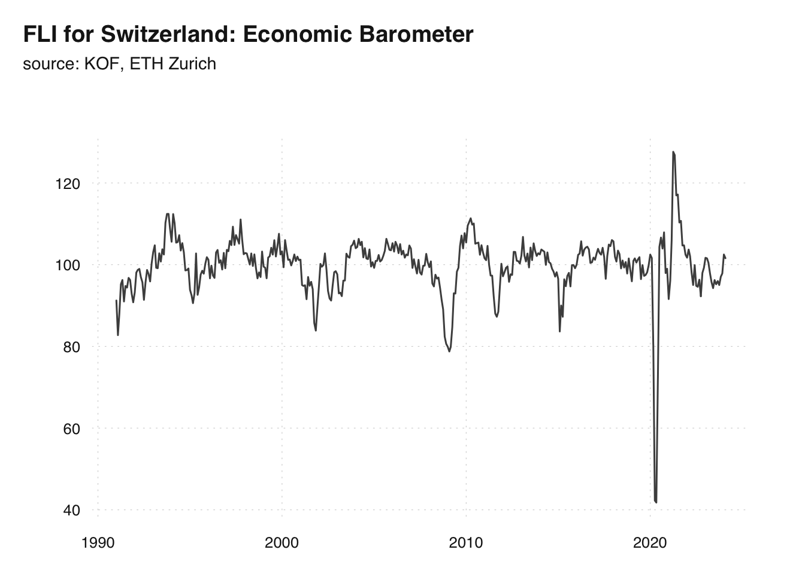
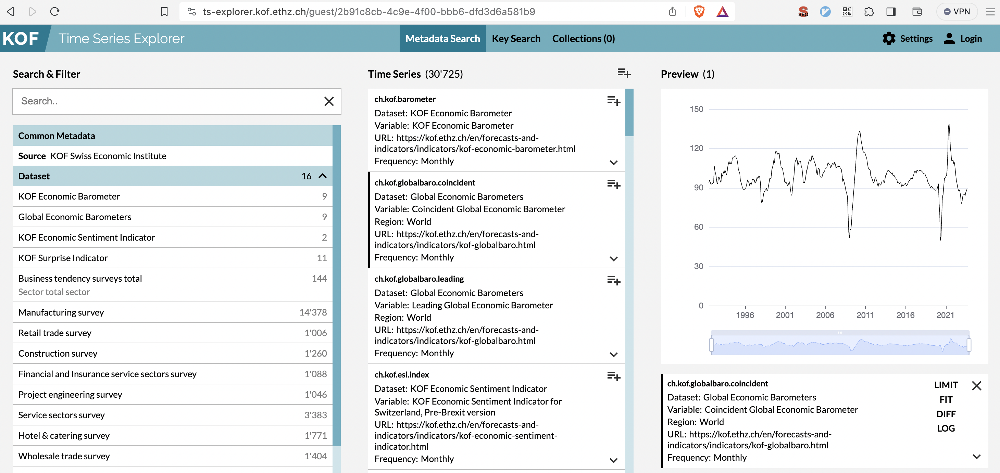

Economic Datasets
Conduct research with KOF’s unique time series and micro data!
One of the three main goals of RSEED is to increase the impact of KOF’s unique economic datasets by enabling academic researchers to work with the datasets we built and maintain. Social and economic data ask for contributions not only from researchers, but also from companies and individuals. To fully value these contributions we are committed to creating the conditions to use the economic datasets maintained by KOF while protecting the privacy of individual companies and persons.
Micro Data at KOF

The term “micro data” refers to unit-level data obtained from sample surveys, censuses and administrative systems, usually from individual firms. Part of the KOF Lab’s expertise stems from decades of fine-grained panel data monitoring of the Swiss economy, partly through surveys from which micro data are generated. This added value is enhanced by giving researchers access to some of the anonymised micro data and thus increasing the use of the data.
opendata.swiss at KOF
KOF’s economic indicators are its most exposed data. Indicators such as the KOF Barometer (see below) are publicly available and designed for intertemporal comparison as they summarise economic development in a single number.


Comprehensive dissemination of the extracted information is an important part of monitoring the Swiss economy. Hence, it is important to follow standards in order to make data not only available but immediately processable. KOF indicators are available from the official open government data (OGD) portal of the Swiss Federal Office of Statistics and the KOF Data application programming interface (API).
| Learn more about KOF indicators on kof.ethz.ch | KOF at opendata.swiss
Time Series Database at KOF
In addition to its publicly available time series, KOF offers a plethora of finer grained time series including regional and sector specific indicators. The KOF time series data API provides researchers with access to over 30’000 time series on every sector of the Swiss economy.

KOF Micro Data Center |KOF Time Series Explorer | kofdata API R package | Learn more about the KOF Time Series database on kof.ethz.ch